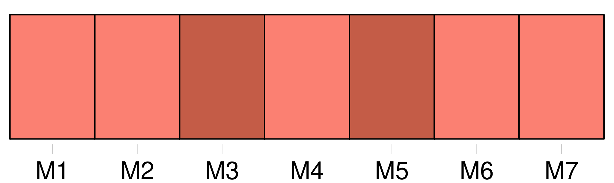
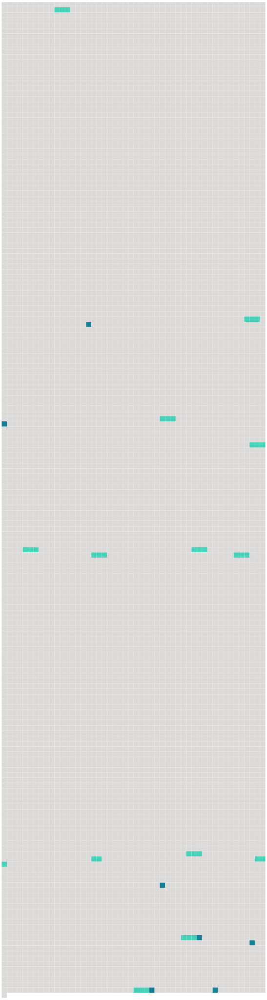

Longueur nb maillons : 20 mentions |
 |
Elles englobent les sources associées à tout dépôt délibéré à des fins d'élimination dans le sous-sol marin, rendu accessible depuis la terre par un tunnel, une canalisation ou d'autres moyens, ainsi que les sources associées aux structures artificielles placées à des fins autres que des activités offshore dans la zone maritime sous la juridiction d' [une partie contractante] [74 phrases]
Une notification faite au secrétaire exécutif en vertu du paragraphe 2 du présent article peut indiquer qu' [une partie contractante] n'est pas en mesure d'accepter une décision pour ce qui concerne un ou plusieurs de [ses] territoires autonomes ou dépendants auxquels s'applique la convention. [41 phrases]
Une notification adressée au gouvernement dépositaire en vertu du paragraphe 3 du présent article peut indiquer qu' [une partie contractante] n'est pas en mesure d'accepter l'amendement pour ce qui concerne un ou plusieurs de [ses] territoires autonomes ou dépendants auxquels s'applique la convention. [12 phrases]
Lorsqu'une pollution provenant d' [une partie contractante] est susceptible de porter atteinte aux intérêts d'une ou plusieurs autres parties contractantes à la convention, les parties contractantes concernées entrent en consultation, à la demande de l'une d'entre elles, en vue de négocier un accord de coopération. [28 phrases]
[Une partie contractante] peut dénoncer la convention à tout moment après l'expiration d'un délai de deux ans à compter de la date d'entrée en vigueur de la convention pour [ladite partie contractante] , par notification écrite adressée au gouvernement dépositaire. [1 phrases]
Sauf disposition contraire dans une annexe autre que les annexes I à IV de la convention, [toute partie contractante] pourra, à tout moment après l'expiration de deux ans à compter de la date d'entrée en vigueur de cette annexe pour [cette partie contractante] , dénoncer cette annexe par notification écrite adressée au gouvernement dépositaire. [86 phrases]
Article 9 [La partie contractante] informe la Commission des mesures adoptées à la suite de cette consultation. [5 phrases]
Toute partie contractante dont les autorités reçoivent un tel rapport informe en conséquence, si [elle] le juge approprié, toute autre partie contractante concernée. [23 phrases]
[Toute partie contractante] [qui] a l'intention de prendre la décision d'émettre un permis d'immersion d'une installation désaffectée offshore, ou d'un pipeline désaffecté offshore qui aura été mis en place dans la zone maritime après le 1er janvier 1998, fait connaître aux autres parties contractantes, par l'intermédiaire de la Commission, les raisons pour lesquelles [elle] accepte cette immersion, de manière à permettre une consultation. [11 phrases]
[Toute partie contractante] [dont] les autorités reçoivent un tel rapport informe en conséquence, si [elle] le juge approprié, toute autre partie contractante concernée. |
 |
Il est possible de télécharger la ressource sur la page Ortolang |
Si vous avez des questions ou vous voyez des erreurs, merci d'envoyer un mail à silvia.federzoni89@gmail.com |